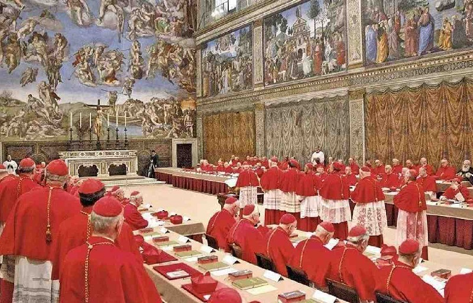

¿Cúando se inicia el Cónclave?

La mañana de este lunes, 28 de abril, durante la V Congregación General
los más de 180 Cardenales reunidos en el Aula Nueva del Sínodo del
Vaticano decidieron que, el próximo miércoles 7 de mayo comenzará el
Cónclave para elegir al 267º Sucesor de Pedro, en la Capilla Sixtina del
Vaticano, que permanecerá cerrada al público durante esos días.
La Misa de apertura y la procesión hacia la Capilla Sixtina
El miércoles 7 de mayo por la mañana, todos concelebrarán la solemne
Misa “pro eligendo Pontifice”, celebración Eucarística presidida por el
Decano del Colegio Cardenalicio, quien invitará a sus hermanos a
dirigirse por la tarde a la Capilla Sixtina con estas palabras: “Toda la
Iglesia, unida a nosotros en la oración, invoca constantemente la gracia
del Espíritu Santo, para que sea elegido por nosotros un digno Pastor de
todo el rebaño de Cristo”

La elección del nuevo Papa

Desde allí, la sugestiva procesión con traje coral se dirige a la
Capilla Sixtina, en cuyo interior los cardenales cantarán el himno
Veni,Creator Spiritus y prestarán juramento. La Capilla Sixtina estará
acondicionada con bancos para el recuento de votos y un horno donde se
quemarán las papeletas. Para elegir al Papa será necesaria una mayoría
cualificada de dos tercios. Están previstas cuatro escrutinios por día,
dos en la mañana y dos en la tarde, y después de la 33ª o 34ª votación,
en todo caso, se hará una segunda vuelta directa y obligatoria entre los
dos cardenales que hayan obtenido mayor número de votos en la última
votación. Pero también en este caso siempre será necesaria una mayoría
de dos tercios. Los dos cardenales que quedan en pugna no podrán
participar activamente en la votación. Si los votos para un candidato
alcanzan los dos tercios de los votantes, la elección del Pontífice es
canónicamente válida.
Votación terminada
En este momento el último del orden de Cardenales Diáconos llama al Maestro de las Celebraciones Litúrgicas y al Secretario del Colegio Cardenalicio. A los nuevos elegidos se les preguntará: ¿Acceptasne electionem de te canonice factam in Summum Pontificem? (¿Acepta usted su elección canónica como Sumo Pontífice?) y ante una respuesta afirmativa añade: ¿Quo nomine vis vocari? (¿Cómo quieres que te llamen?), pregunta a la que responderá con su nombre pontificio. Tras la aceptación, se queman las papeletas, logrando que desde la Plaza de San Pedro se pueda ver el clásico humo blanco. Al final del Cónclave, el nuevo Pontífice se retira a la “Sala de las Lágrimas”, es decir, la sacristía de la Capilla Sixtina, donde revestirá por primera vez los ornamentos papales – preparados en tres tallas – con los que se presentará a la multitud de fieles atraídos a la Plaza de San Pedro por la fumata blanca.